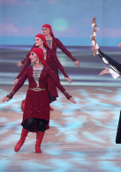

Адыги, которые занимались искусством, в народе всегда были почетаемы и популярны. Так же это считалось делом людей из высших сословий. Они считались людьми, которые дают показывают душу черкесского народа: радость, боль, горе, личные и внутринациональные переживания - всё это транслировалось через искусство. Черкес - это человек, который силён и не показывает своих эмоций, он не мягкотел - крепок как камень. Не прилично плакать или громко смеяться на людях, но выражать это искусством - танцем, песней, музыкой ,ремеслом можно
Устное народное творчество адыгов представляет собой богатую историю музыкальной культуры, укорененную в устной фольклорнотрадиции этноса. Адыгская музыка отражает особенност среды обитания народа, его социокультурные особенностиимировоззрение.Традиционные адыгские народные песни представляют собой уникальные образцы многоголосной фактуры, отражающие влияние природы на формирование эстетики и ценностных представлений
Это своего рода художественная знаковая система, насыщенная особой метафорической образностью. Этот фольклор отличается своей древнейшей историей, устойчивыми традициями, ярким темпераментом и образностью, оригинальной лексикой и техникой исполнения, большим разнообразием пластических проявлений и многочисленными элементами театральности
УБЫХСКИЙ
ИСЛАМЕЙ
УДЖ
ЗАГАТЛЯТ
ЛАПЭРИСЭ
Aмериканский художник черкесского происхождения, известный в мире современный авангардист. Его произведения и инсталляции — это смесь несколько техник и стилей, что и помогло ему в итоге обрести свой уникальный, глубоко личный. Одну из последних своих выставок «Существование-сосуществование» он посвятил черкесскому народу